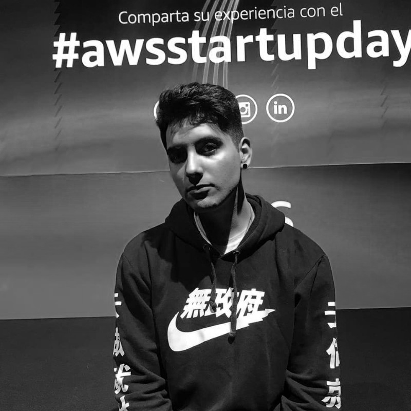

<section class="h-100 gradient-custom-2">
    <div class="container py-3 h-100">
      <div class="row d-flex justify-content-center align-items-center h-100">
        <div>
          <div class="card">
            <div class="rounded-top text-white d-flex flex-row" style="background-image: url(../../../assets/images/Banner.png)">
              <div class="ms-4 mt-5 d-flex flex-column" style="width: 150px;">
                
              </div>
              <div class="ms-3" style="margin-top: 6rem;">
                <h5>Franco Javier Aguirre</h5>
                <p>Full Stack Developer Jr</p>
              </div>
            </div>
            <div class="card-body text-black pt-5">
              <div class="mb-5">
                <div class="p-4" style="background-color: #f8f9fa;">
                  <p class="font-italic mb-1">Soy el Co-Fundador de una comunidad de fútbol en inferiores que actualmente sigue creciendo, mi rol se basa en la creación de contenidos, tanto la confección de imágenes para posts, como la dirección y edición de videos para YouTube. También me encargo de la creación y el mantenimiento de la página web y los sistemas necesarios para la automatización de la empresa. 

                    <br><br>Me considero una persona altamente adaptable que busca aprender lo necesario para poder lograr su objetivo, tengo conocimientos con certificación en: Inglés C2 (Capacidad para nivel profesional), Desarrollo Full Stack, Diseño gráfico, diseño de interfaces, creación de contenidos, edición y dirección de video, desarrollo en WordPress, marketing digital, Facebook Ads y Google Ads. </p>
                </div>
              </div>
            </div>
          </div>
        </div>
      </div>
    </div>
  </section>
